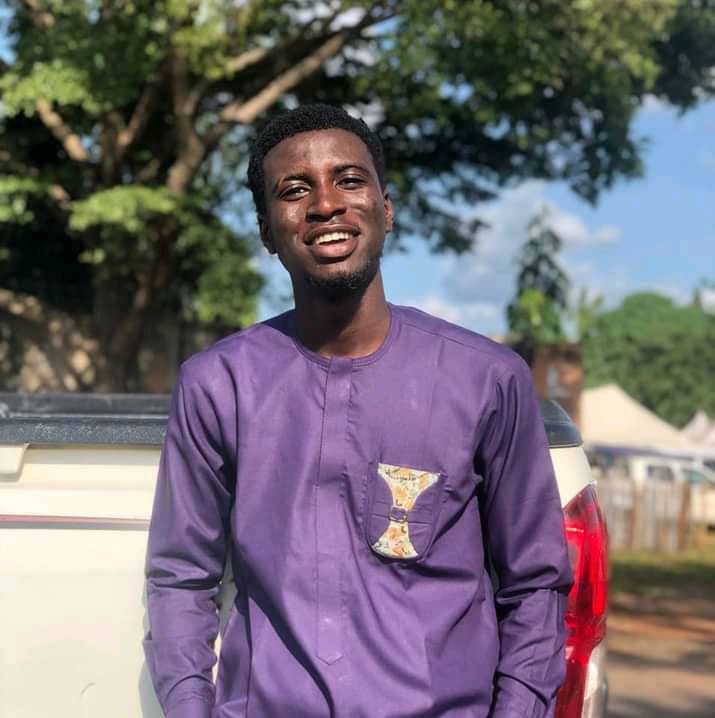

Emmanuel Godwin Ajiduku

Summary
I'm a passionate Web developer and a computer engineer, who want to achieve greatness by acquiring value and making impact through solving real-time problems.
Education
- Udemy Web Development Course 2023: In view
- B.Eng Computer Engineering: In view (Federal University of Technology Minna)
- SSCE: 2012 - 2018 (FGC Wukari)
- First School Leaving Certicate: 2012 (Central Primary School Wukari)
Work Experience
- Intern at Galaxy Backbone Limited: 2023 - 2024
- Manager at Oga Naf Handset Repairs Wukari, Taraba State
- Welfare Director at NACOMES FUTMinna: 2022 - 2023
- Blogger @ Fivekaycooded
Skills
- HTML and CSS ⭐️⭐️⭐️⭐️⭐️
- Javascript ⭐️⭐️
- Graphics Design ⭐️⭐️⭐️
- Blogging ⭐️⭐️⭐️⭐️
Awards and Certication
- NACOMES Certificate of Service : Welfare Director 2022/2023
- SWEP Certificate of completion 2021
- HOD's CUP Winners Medal 2021/2022
- DEAN's CUP runners up Medal 2022/2023
Others